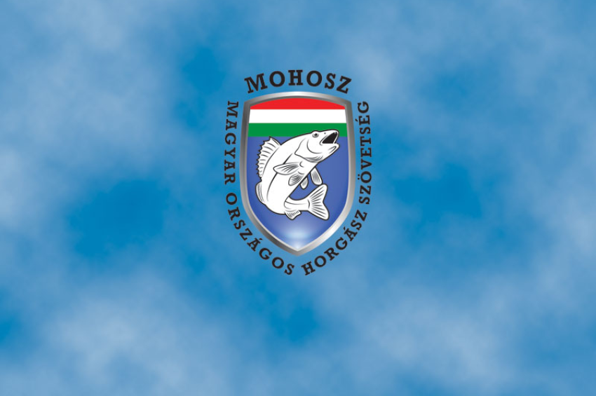
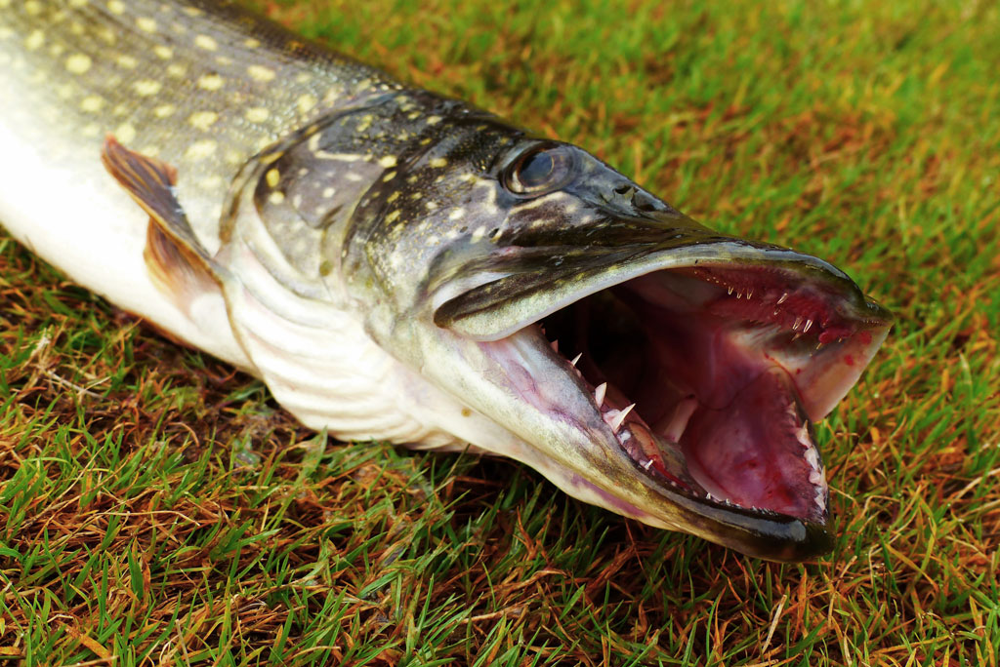
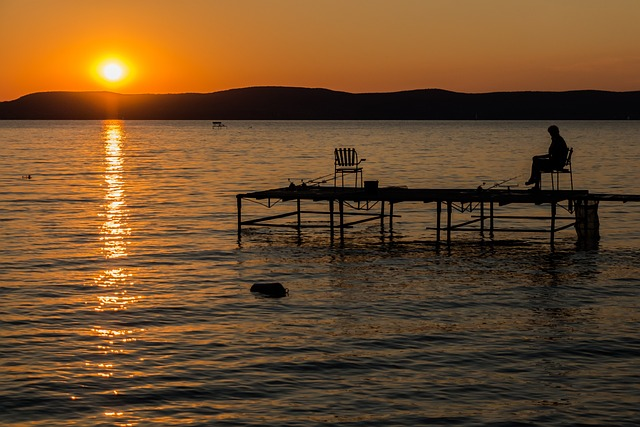
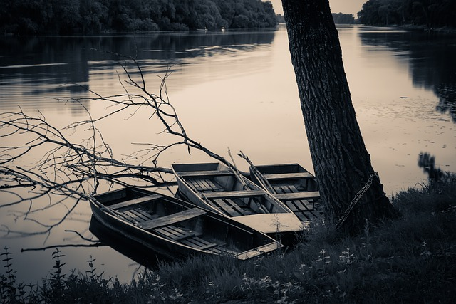
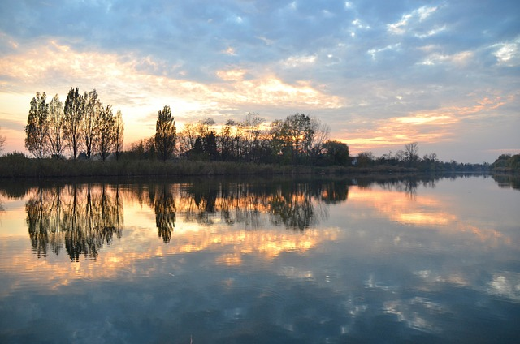

Újabb szép magyar sikerek a nemzetközi horgászsportban
Az Európa-bajnokságot Szlovákia nyerte 19 ponttal, a magyar csapat 27 ponttal a második helyet szerezte meg a 33 ponttal harmadik helyen végző lengyel válogatott előtt.
Országos Horgászrend 2024
2024. január 1-től a 2024. horgászévre valamennyi, a MOHOSZ szervezeti rendszerébe tartozó horgászszervezet által horgászati célra hasznosított halgazdálkodási vízterületre, külön kikötés hiányában a helyi horgászrendek szabályozásával együttesen.
Ragadozóhal horgászati korlátozás
Rendkivüli ragadozóhal horgászati korlátozás bevezetése 2023. december 16-tól, tekintettel arra, hogy a héten telepített ragadozók átlagmérete nagyobb lett a vártnál.

Drágulnak az országos területi horgászjegyek
A Magyar Országos Horgász Szövetség (Mohosz) nyilvánosságra hozta a 2024-es éves általános országos területi horgászjegyek, valamint a dunai és tiszai területi jegyek árait.

Kapitális pontyot fogott ki a Tiszából egy magyar horgász
Elégedetlenek a balatoni horgászok, ugyanis egyre kevesebb helyen van lehetőségük arra, hogy pecázzanak.
Lázonganak a horgászok, egyre kevesebb a pecahely a Balatonnál
Lázonganak a horgászok, egyre kevesebb a pecahely a Balatonnál
Négy horgász is eltévedt a csónakjával a ködben
Négy horgász is veszélybe került péntek este a Tiszán, miután eltévedtek a hirtelen elszálló ködben

Agrárminisztérium: Kiemelt támogatást kapnak a horgászok
A jogszabályi előírásoknak megfelelően a Magyar Országos Horgász Szövetség (Mohosz) átadta a 2022. évi közfeladat-ellátási beszámolóját az agrárminiszternek – közölte az Agrárminisztérium (AM) hétfőn az MTI-vel.
Új pontyrekord született a Tisza-tavon
Megdőlt a tórekord az első Tisza-tavi International Wild Carp Challenge (IWCC) pontyfogó versenyen.